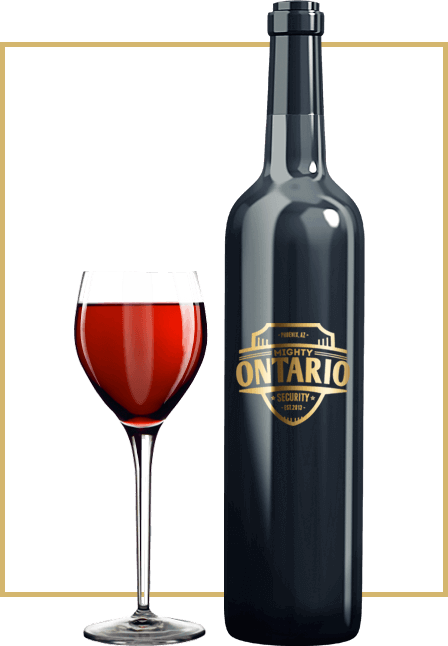

ONLINE STORE
since 1897
About us
Kowin is an online store where you can buy a gift for your beloved, family member, close friend etc. We also give great ideas for a present and we make great combinations to surprise someone. We give you the fastest delivery you will receive your order in the next 24 hours. Make someone happy and feel loved by only one click, show someone how much you care about them. We guarantee that your order will be the same as in the picture you chose.
- 
-

VRANEC
Dark ruby color, with accentuated aroma of grapes which later is intertwined with discreet aroma of cherry and sour cherry. Robust, full, concentrated, rich with soft and pleasant tannins. Helps reduce fat, triglycerides and cholesterol in the blood. It is best served at 15-17°C with roast pork, veal, venison, home-made pies, Macedonian plates and strong aromatic cheeses.
BOUQET
Recognizable yellow-greenish, with complex and seductive aroma of exotic fruits, apple and peach, woven with tones of acacia flower. Long-lasting and tenable taste, glycerol-mild, with fruity and spicy nuances. It is ideally served at 10-12°C as an aperitif with white meat, fish, seafood, green salads and cheese. see more photos
BOUQET
Recognizable yellow-greenish, with complex and seductive aroma of exotic fruits, apple and peach, woven with tones of acacia flower. Long-lasting and tenable taste, glycerol-mild, with fruity and spicy nuances. It is ideally served at 10-12°C as an aperitif with white meat, fish, seafood, green salads and cheese.
see more photosENVELOPE
By bying one of our products you get a free envelope specialy designed for the person you love and respect.
see more photos